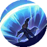

Who is Alucard ?
Demon hunter who detests the darkness Alucard's father was a comrade-in-arms of Tigreal who disappeared in a battle with the Demons. Therefore, he hated darkness, joined the Monastery of Light, and swore to destroy all Demons. But later he learned the hidden secrets of this battle, so he left the Monastery of Light in anger and fought the darkness in his own way.
| Alucard Skills | |||
|---|---|---|---|
| Skill 1 | Pursuit | Alucard's skills deal 1.5 times damage when only one enemy is hit. After each skill cast, his next Basic Attack deals 1.2 times damage and allows him to dash to the target's location.Alucard's skills benefit from 50% of his Physical Lifesteal. |
|
| Skill 2 | Groundsplitter | Alucard rolls to the target location and slams his blade on the ground, dealing 270(+110% Extra Physical Attack) Physical Damage to enemies hit and slowing them by 40% for 2s. |
|
| Skill 3 | Whirling Smash | Alucard launches a whirling slash, dealing 320(+120%Extra Physical Attack) Physical Damage to nearby enemies. |
|
| Skill 4 | Fission Wave |  | Alucard absorbs the energy of enemies in the target direction, gaining 40% Physical Lifesteal, slowing the enemies by 40% for 4s, and marking them for 6s and reduces cooldown for the other skills by 50%. His attacks against marked enemies always trigger the damage bonus from Pursuit. Use Again: Alucard releases a shockwave in the target direction, dealing 400(+200%Extra Physical Attack) Physical Damage to enemies hit. |